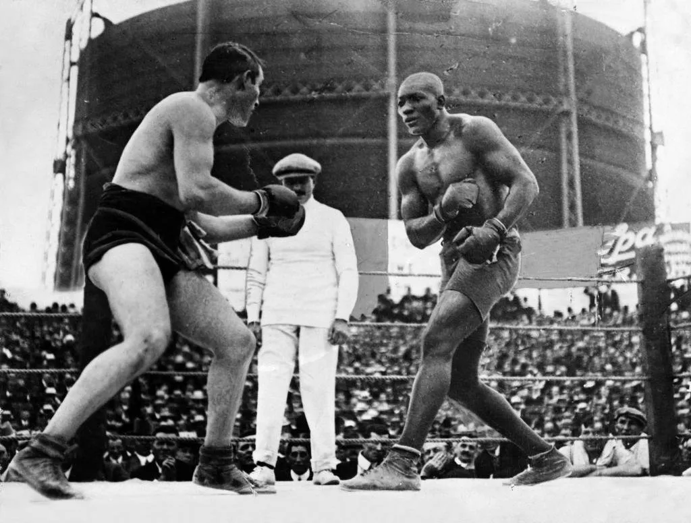
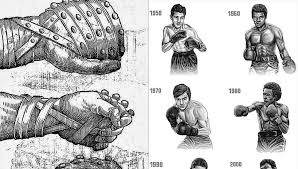
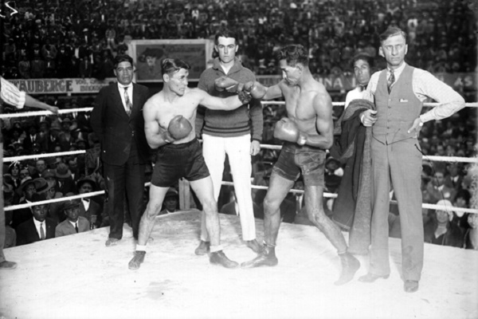

El boxeo, es un deporte que ha cautivado a millones en todo el mundo, tiene una historia fascinante
que se remonta a la antiguedad. Desde sus humildes comienzos como una forma de entretenimiento
hasta convertirse en un fenomeno global, el boxeo ha evolucionado a lo largo de los siglos,
moldeado por culturas, tradiciones y figuras legendarias. Se extendio por todo el mundo, adoptando
diferentes estilos y reglas segun las culturas. En el siglo XVII, el boxeo ingles comenzo a
tomar forma con la introduccion de reglas formales y el uso de guantes acolchados. Estos cambios
no solo hicieron que el deporte fuera mas seguro, sino que tambien lo hicieron mas accesible para
una audiencia mas amplia.
El siglo XIX presencio un auge en la popularidad del boxeo, especialmente en Estados Unidos y
el Reino Unido. Las peleas se llevaron a cabo en arenas cada vez mas grandes y atrajeron a
multitudes masivas avidas por presenciar la accion en el ring. Figuras como John L. Sullivan,
considerado el primer campeon mundial de peso pesado, ayudaron a elevar el estatus del boxeo a
nivel internacional.
El siglo XX marco una era dorada para el boxeo, con nombres legendarios como Joe Louis,
Muhammad Ali, Sugar Ray Robinson y Mike Tyson, entre otros. Estos boxeadores no solo eran atletas
excepcionales, sino tambien iconos culturales que trascendieron el deporte y se convirtieron en
simbolos de valentia, determinacion y estilo.
Hoy en dia, el boxeo continua evolucionando con la introduccion de nuevas divisiones de peso,
reglas y tecnologias que mejoran la seguridad de los combatientes. A traves de transmisiones
televisivas, eventos en vivo y plataformas digitales, el boxeo llega a millones de personas en todo
el mundo, conectando a comunidades y culturas a traves de la emocion y la pasion del ring.



REGLAS
Puntuacion: Las peleas de boxeo se pueden ganar por nocaut (cuando un boxeador no puede
continuar), decision de los jueces (basada en puntos acumulados durante la pelea) o descalificacion
(por violaciones graves de las reglas).
Rondas: Las peleas de boxeo generalmente consisten en un numero predeterminado de rondas, cada una
con una duracion especifica. Las rondas tipicas pueden ser de 3 minutos de duracion con un
descanso de 1 minuto entre cada una.
Ring: El combate se lleva a cabo dentro de un cuadrilatero, tambien conocido como ring, que esta
delimitado por cuerdas elasticas.
Categorias de Peso: Los boxeadores compiten en diferentes categorias de peso, que van desde el peso
mosca hasta el peso pesado, para garantizar una competencia justa.
Faltas y Penalizaciones: Se penalizan las faltas como golpear por debajo del cinturon, golpear con
la cabeza, golpear despues de la campana y otras infracciones graves.
TECNICAS:
Algunas de las tecnicas de boxeo mas conocidas son las siguientes
Jab: Un golpe recto lanzado con el puño delantero, diseñado para mantener a distancia al oponente y
establecer el ritmo de la pelea
Directo: Un golpe poderoso lanzado con el puño trasero, dirigido directamente hacia el oponente
con el objetivo de infligir daño.
Gancho: Un golpe curvo lanzado con el brazo doblado, diseñado para golpear al oponente en el
costado de la cabeza o el cuerpo.
Uppercut: Un golpe ascendente lanzado desde abajo hacia arriba, con el objetivo de alcanzar al
oponente debajo de su guardia.
Defensa: Técnicas para esquivar, bloquear o desviar los golpes del oponente, incluyendo movimientos
de cabeza, bloqueos con los brazos y contraataques.
Movimiento de Pies: El boxeo requiere un buen control del movimiento de los pies para
desplazarse por el ring, establecer ángulos de ataque y defenderse de los golpes del oponente.
Condición Física: La resistencia cardiovascular, la fuerza muscular y la agilidad son
fundamentales para el éxito en el boxeo, por lo que los boxeadores suelen seguir rigurosos
programas de entrenamiento físico.
DIVISION DE PESOS
En el boxeo, las divisiones de peso son categorías que permiten a los boxeadores competir contra
oponentes de tamaños similares. Estas divisiones son reguladas por diversas organizaciones, como
la Asociación Mundial de Boxeo (WBA), el Consejo Mundial de Boxeo (WBC), la Federación
Internacional de Boxeo (IBF) y la Organización Mundial de Boxeo (WBO). A continuación se detallan
las principales divisiones de peso en el boxeo profesional:
Peso Mínimo
Hasta 47.63 kg (105 lbs)
Peso Minimosca
Hasta 48.99 kg (108 lbs)
Peso Mosca
Hasta 50.80 kg (112 lbs)
Peso Supermosca
Hasta 52.16 kg (115 lbs)
Peso Gallo
Hasta 53.52 kg (118 lbs)
Peso Supergallo
Hasta 55.34 kg (122 lbs)
Peso Pluma
Hasta 57.15 kg (126 lbs)
Peso Superpluma
Hasta 58.97 kg (130 lbs)
Peso Ligero
Hasta 61.23 kg (135 lbs)
Peso Superligero (Peso Junior Welter)
Hasta 63.50 kg (140 lbs)
Peso Wélter
Hasta 66.68 kg (147 lbs)
Peso Superwélter (Peso Mediano Junior)
Hasta 69.85 kg (154 lbs)
Peso Mediano
Hasta 72.57 kg (160 lbs)
Peso Supermediano
Hasta 76.20 kg (168 lbs)
Peso Semipesado
Hasta 79.38 kg (175 lbs)
Peso Crucero
Hasta 90.72 kg (200 lbs)
Peso Pesado
Más de 90.72 kg (200 lbs)
Cada una de estas divisiones tiene sus propias normas y campeonatos, y los boxeadores suelen moverse
entre ellas dependiendo de su peso natural y sus objetivos en la carrera. Estas categorías aseguran
combates más justos y competitivos, ya que igualan las condiciones físicas entre los oponentes.